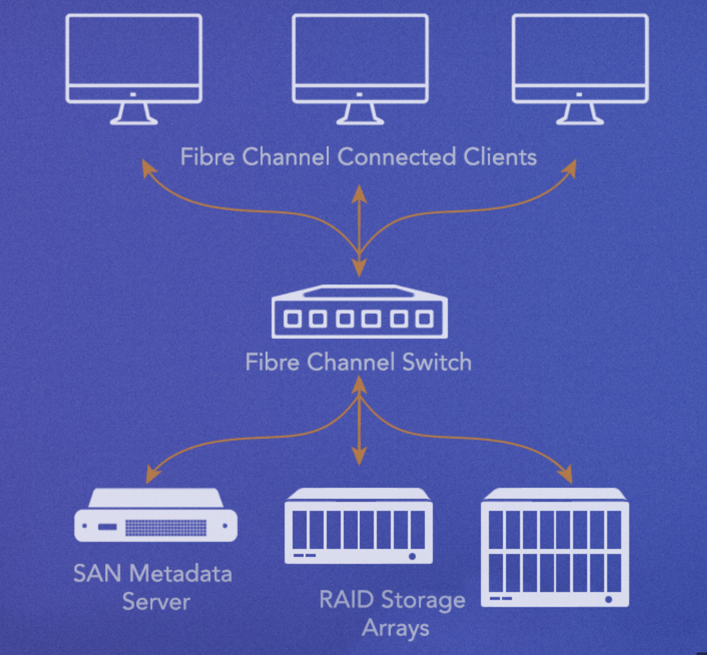

NAS-SAN异同点
NAS 是基于网络的单个存储设备，相对比较便宜且容易安装。SAN 是一个多种设备相互耦合的网络，更加昂会且安装和管理也更复杂。对用户来说，最大的不同点是：NAS 设备以网络挂载卷的方式提供共享存储服务，通常使用 SMB/CIFS/NFS 协议。SAN 对用户来说更像是本地磁盘一样。
NAS 以 RAID 数组的方式组织排列共享文件。NAS 会存在多份冗余的数据（通常是 RAID 冗余）以提高可用性，且会自动备份到其他设备或者云上。NAS 设备本身是一个网络节点，就像其他 TCP/IP 设备或主机一样。
NAS 的局限性：
- 伸缩性和性能较弱。随着用户的增加，只能升级硬件和网络带宽。
- 容易出现网络拥堵的情况。所有的 packets 都必须接收成功，文件才可用。
SAN 优点：
- 高性能，低延迟。
客户端与存储卷之间通过光纤连接。服务器与客户端使用专有网络进行通信。 - 允许多用户同时访问共享存储。如上百的视频编辑者能够同时使用 10 GB/s 的带宽。因此适用于多人视频创作环境。
- 操作系统级别的文件访问
- 支持上百用户的同时共享访问
SAN 的缺点：
- 花费高，需要管理员维护专有的网络及光纤网络。

| NAS | SAN | ||
|---|---|---|---|
| Often used in homes and small to medium sized businesses. | Often used in professional and enterprise environments | ||
| Less expensive. | More expensive | ||
| Easier to manage. | Requires more administration | ||
| Data accessed as if it were a network-attached drive | Servers access data as if it were a local hard drive | ||
| Speed dependent on local TCP/IP Ethernet network, typically 1GbE to 10GbE, and affected by the number of other users accessing the storage at the same time. Generally slower throughput and higher latency due to the nature of Ethernet packetization, waiting for the file server, and latency in general | High speed using Fibre Channel, most commonly available in 16 Gb/s to 32 Gb/s. Fibre Channel can be delivered via high speed Ethernet such as 10Gb or 40Gb+ networks using protocols such as FCoE and iSCSI | ||
| SMB/CIFS, NFS, SFTP, and WebDAV | Fibre Channel, iSCSI, FCoE | ||
| Lower-end not highly scalable; high-end NAS scale to petabytes using clusters or scale-out nodes | Can add more storage controllers, or expanded storage arrays allowing SAN admins to scale performance, storage, or both. | ||
| Simply connects to your existing Ethernet network. | Requires dedicated Fibre Channel connections for clients, servers, and storage, and often a separate, dedicated Ethernet network for file request traffic. | ||
| Entry level systems often have a single point of failure, e.g. power supply. | Fault tolerant network and systems with redundant functionality. | ||
| Subject to general Ethernet issues. | Behavior is more predictable in controlled, dedicated environments. | ||
| A central place from which to back up or sync user files. | A place from which to archive files not immediately needed. |
本博客所有文章除特别声明外，均采用 CC BY-NC-SA 4.0 许可协议。转载请注明来自 JeckFS！